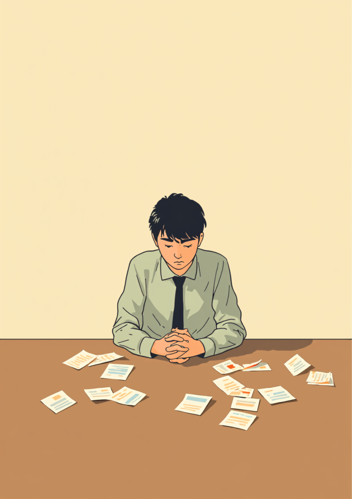
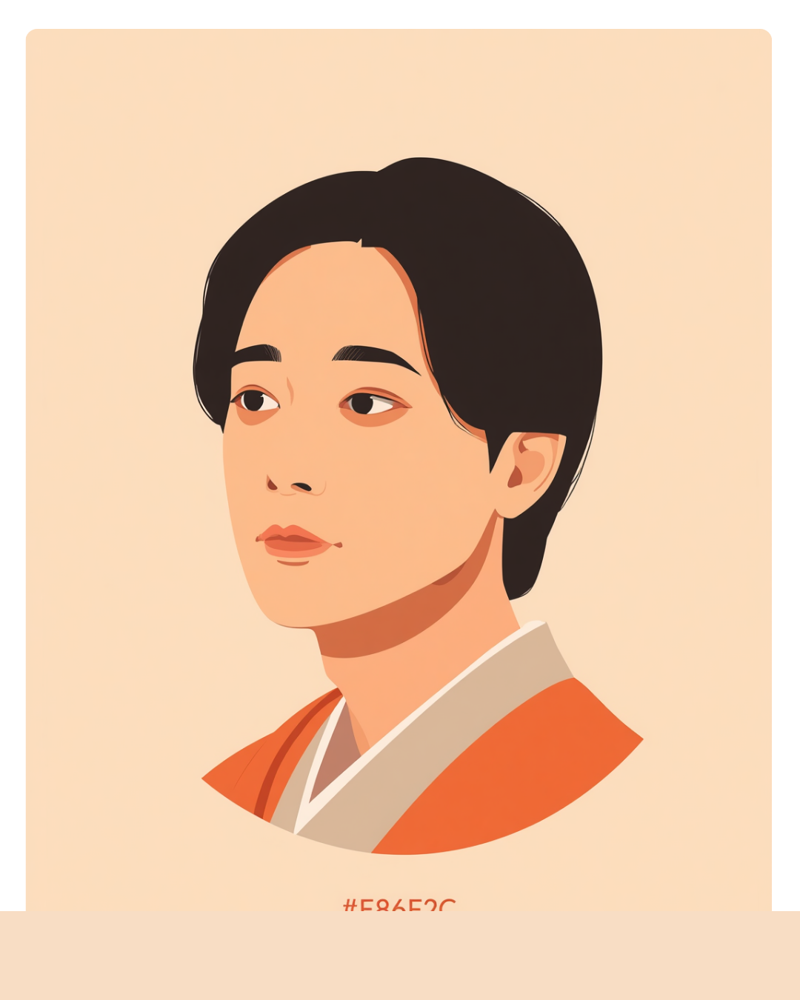

「頑張ってください」が、喉の途中で止まった
就職活動を始めて8ヶ月が経っていた相談者が、面談室の椅子に座っていました。手元には、不採用の通知メールを印刷した紙が数枚。丁寧に折りたたまれていて、それだけで何度も読み返した跡が伝わってきました。
「また落ちました」と、相談者は小さく言いました。
次の面接は3日後。
ここで自分が何を言うか、頭の中で言葉を組み立てながら、気づけば「頑張ってください」という言葉が喉のあたりまで出かかっていました。
いつもならそのまま口にしていたはずです。相手を励ますつもりで、数え切れないほど使ってきた言葉でした。でもその日は、なぜか続きが出てきませんでした。
8ヶ月間、その人はずっと頑張ってきたはずです。
面接のたびに自己PR欄を書き直し、落ちるたびに次の応募先を探し、それでもまた申し込むということを、8ヶ月間続けてきた人に向かって、今さら「頑張れ」と言う必要があるのだろうか。そう思った瞬間、言葉は喉の途中で止まりました。
なぜ、その一言が引っかかるようになったのか
最初からそう思っていたわけではありません。むしろ支援員になりたてのころは、「頑張ってください」を面談の締めの言葉として、ほとんど反射的に使っていました。励ましているつもりでしたし、相談者からそれを指摘されたことも一度もありませんでした。
引っかかるようになったのは、ある相談者から聞いた話がきっかけでした。
「面接に落ちるたびに、支援員さんに『次も頑張りましょう』って言われるんです。分かってはいるんですけど、正直、その言葉を聞くと『まだ頑張りが足りないってことなのかな』って考えちゃって。もう十分やってるつもりなのに、それでも頑張れって言われると、自分がまだ本気を出してないみたいに聞こえて、しんどくなる時があります。」
その時は、正直ピンと来ていませんでした。励ますつもりで言った言葉が、相手にとっては「まだ足りない」という指摘に聞こえることがあるという発想が、自分の中になかったからです。
それから意識して周りの相談者の様子を見るようになると、似たような反応に何度も出くわしました。「頑張ってください」と言われたあと、一瞬だけ表情がこわばる人が、思っていたよりずっと多かったのです。大きくうなずいて「はい、頑張ります」と返してくれる人ほど、実はその一言のあとに、小さく息を吐いていることに気づきました。
もうひとつ、印象に残っている場面があります。就職活動を1年近く続けていた相談者が、面談の終わりに、こちらが何も言う前にぽつりとこう言ったのです。
「正直、『頑張って』って、もう聞き飽きちゃったんですよね。家族にも、前の職場の人にも、就活サイトのメールにまで書いてあって。みんな優しさで言ってくれてるのは分かるんですけど、頑張れの数だけ、まだ結果を出せてない自分を突きつけられてる気がして、めちゃくちゃ苦しかった時期がありました。」
この言葉を聞いてから、面談の最後に「頑張ってください」と言う前に、一呼吸置くようになりました。
言葉を変えてみたら、相手の顔が変わった
次にその相談者と会ったのは、面接の前日でした。
正直に言うと、何を話せばいいのか、こちらもまだ決めきれていませんでした。
ただ、「頑張ってください」だけは、もう言わないと決めていました。

相談者の肩から、少しだけ力が抜けたのが分かりました。
それまで背筋を伸ばして座っていたのが、少しだけ前かがみになって、面接で聞かれそうな質問について、自分から話し始めたのです。
結果として、その面接がどうなったかは、ここには書きません。
ただ、あの日、言葉を飲み込んでよかったと、今でも思っています。
今、面談で気をつけていること
まず、ここまでの頑張りを言葉にする
「頑張ってください」を言う前に、その人がこれまで何をしてきたかを、できるだけ具体的な言葉で伝えるようにしています。回数や期間、行動そのものを言葉にするだけで、「見てもらえている」と感じてもらえることがあるようです。
次に、不安の中身を具体的に尋ねる
漠然と励ますより、「何が一番不安ですか」「どこが引っかかっていますか」と、不安の中身を具体的に尋ねるようにしています。抽象的な励ましより、その人が今抱えている一点に焦点を当てる方が、結果として次の一歩につながりやすいと感じています。
- 「頑張ってください」を面談の締めの言葉にしない
- まず、これまでの努力を具体的な言葉にして伝える
- 「不安なのはどこか」を、漠然とではなく具体的に尋ねる
- 相手が「頑張れ」という言葉自体を好む場合は、無理に避けない
よくある質問
関連記事
この記事に、聞いてみたいことはありますか？
「自分の場合はどうなんだろう」と思ったことを、気軽に書いてみてください。いただいた質問は個別にお返事したうえで、匿名で記事にすることがあります。
mimemime代表。就労支援の現場経験をもとに、障がいのある方の働く不安に寄り添う記事を執筆。